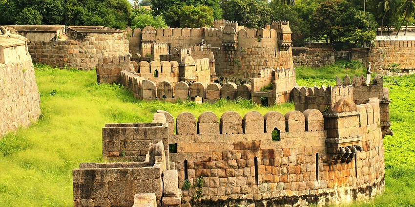

GOJRA FORT
Gojra Fort: A Historic Marvel of Timeless Beauty

Gojra Fort is a historical site located atop the Naammam Malai hill, east of Vellore city in Tamil Nadu. Built during the Maratha Empire in 1678, the fort played a crucial role during the Maratha siege of Vellore Fort. It was one of two forts constructed by Chhatrapati Shivaji’s forces, with the nearby Sajra Fort also contributing to the siege efforts. Strategically placed around 2 km from Vellore Fort, Gojra Fort's elevated position allowed it to oversee and control the surrounding area, playing a significant role in the bombardment of the lower Vellore Fort.
Today, Gojra Fort remains a testament to the military history of the region. Visitors can explore its remnants, including stone walls and other structures, which offer a glimpse into the architectural and strategic designs of the time. The fort’s location provides panoramic views of the surrounding landscape, making it an attractive destination for both history enthusiasts and nature lovers. While it may not be as widely visited as other historic forts, Gojra Fort holds an important place in the historical narrative of Vellore.